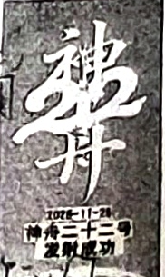

石家庄市第二十七中学 2026—2027 第一学期期中考试
初 二 语 文
命题人：语文组
考试时间 120 分钟，满分 120 分
学校：________ 班级：________ 姓名：________
注意事项：
1．考生务必将自己的姓名、班级、考场、座位号、准考证号填写在答题卡上，并在规定区域里，正确粘贴条形码，考试结束，监考人员将答题卡收回，试卷自行保管。
2．客观题用 2B 铅笔把答题卡对应题目的答案标号涂黑，主观题用 0.5 毫米黑色签字笔作答，务必在规定区域作答，答案写在规定区域外无效。
第一部分（1—3 题 共 21 分）
1．阅读同学撰写的“追忆抗战英雄”文段，回答问题。（7 分）
80 年前的华夏大地，烽火连天，无数英雄儿女挺身而出，谱写了气壮山河的抗战史诗。这其中，有在战场上冲锋陷阵的战士，他们面对敌人的炮火毫不畏惧，以锐不可当之势突破层层防线，一路 jiān 灭敌军，用鲜血捍卫国土；有隐蔽在敌后的情报工作者，他们 dān 精竭虑的潜伏与传递，在无声战场为前线输送关 jiàn 信息；还有无数平凡百姓，他们任劳任怨支援前线，用朴实的行动筑起全民抗战的长城。
（1）根据拼音补全词语。（3 分）
① jiān 灭________ ② dān 精竭虑________ ③ 关 jiàn________
（2）给下列加点字注音。（2 分）
① 锐不可当________ ② 潜伏________
（3）文段中“谱”字在《现代汉语词典》（第 7 版）中有以下义项，“谱写史诗”中“谱”的意思是________。（填写序号）（2 分）
谱：①乐谱；②记录、编写；③大致的标准；④显示出
2．阅读以下新闻，完善“传承抗战精神”板块内容。（6 分）
新华社北京 9 月 3 日电（记者王沁鸥、周欣）在“纪念中国人民抗日战争胜利 80 周年文物特展”上，中国国家博物馆首次公开一批抗战时期的珍贵书信，包括八路军战士写给家人的家书、爱国学生的抗日宣言手稿等。这些文物生动还原了 80 年前中华儿女的抗争历程，目前特展已吸引超 10 万人次参观。
据国家博物馆研究员张敏介绍，此次展出的书信均为馆藏一级文物，历经多年修复整理，纸张上的字迹虽有些斑驳，但字里行间的家国情怀依然清晰。其中一封 1943 年八路军战士李明写给母亲的家书，字里行间满是“保家卫国，虽死不悔”的决心，让不少观众驻足落泪。
【甲】“这些书信不仅是历史的见证，更传递着中华民族宁死不屈、团结抗争，为当代人理解抗战精神提供了鲜活载体。”张敏说。
（1）拟写一个 15 字以内的新闻标题。（2 分）
（2）【甲】句有语病，请指出错误类型并提修改意见。（2 分）
错误类型：________ 修改意见：
（3）特展计划为这批抗战书信征集“精神主题词”，请结合书信内容与抗战精神，拟写主题词并阐明理由。（2 分）
示例：主题词“家国同脉”。
理由：八路军战士的家书中，“保家”与“卫国”紧密相连，体现个人命运与国家命运的深刻联结，彰显抗战时期的家国同心。
3．请补充合适的诗句。（8 分）
（1）《野望》中引用典故，表现诗人身处乱世，孤独无依，想隐居不仕的诗句是：________，________。
（2）《使至塞上》中，“________，________”两句即景设喻，以物自比，比喻表达诗人惆怅、抑郁心情。
（3）《钱塘湖春行》中借莺燕活动传达春天来临信息的句子是：________，________。
（4）《赠从弟》中描写松柏与寒风在对立中所展现的情状，突出了松柏意态从容、志节坚贞的句子是：________，________。
第二部分（4—20 题 49 分）
（一）阅读下面两首诗歌，完成 4—6 题。（7 分）
【甲】黄鹤楼
崔颢
昔人已乘黄鹤去，此地空余黄鹤楼。
黄鹤一去不复返，白云千载空悠悠。
晴川历历汉阳树，芳草萋萋鹦鹉洲。
日暮乡关何处是？烟波江上使人愁。
【乙】相见欢
朱敦儒
金陵城上西楼，倚清秋。万里夕阳垂地大江流。
中原乱，簪缨散，几时收？试倩悲风吹泪过扬州。
4．律诗一般两句一联，每一联都有各自的名称，本诗第五、六句称为________联；一般情况下，律诗要求全诗通押一个韵，本诗押________韵。（2 分）
5．对甲诗的理解和赏析，不恰当的一项是（ ）。（2 分）
A．首联从传说写起，增添了黄鹤楼的神异色彩，表达了诗人对鹤去楼空的无限感慨。
B．颔联中“不复返”，写出物是人非的现实，表现出生不逢时、岁不待人的感伤。
C．颔联中“千载”和“空悠悠”，表现出时空的久远广大，营造了纵深开阔的意境。
D．颈联实写眼前景物，清晰可见的树木，凄凉枯败的茅草，描绘了一幅悲凉的画面。
6．两首诗歌都是登楼望远之作，表达的情感有何异同？（3 分）
（二）阅读下面的文言文，完成 7—10 题。（12 分）
【甲】春冬之时，则素湍绿潭，回清倒影，绝巘多生怪柏，悬泉瀑布，飞漱其间，清荣峻茂，良多趣味。
每至晴初霜旦，林寒涧肃，常有高猿长啸，属引凄异，空谷传响，哀转久绝。故渔者歌曰：“巴东三峡巫峡长，猿鸣三声泪沾裳。”
（节选自《三峡》）
【乙】吾自纳郧节①，即栖托于此。晨起承②初阳听醒鸟晚宿弄夕照听倦鸟。或蹑短屐③，或呼小舠④。相知过从⑤，不迓⑥不送。清酒时进，钓溪腴以佐⑦之；黄粱⑧欲熟，摘野鲜以导之。我醉欲眠，客可且去。此吾居园之乐也。
（选自《弇山园记》，有删改）
【注释】①〔纳郧（yún）节〕指卸任郧阳巡抚。纳，归还。节，符节。郧，地名，此处代指郧阳巡抚一职。②〔承〕这里指迎接。③〔蹑短屐〕穿低矮的木屐。④〔舠（dāo）〕小船。⑤〔过从〕互相往来。⑥〔迓（yà）〕迎接。⑦〔佐〕辅助，帮助。这里指帮助下酒。⑧〔黄粱〕黄小米。
7．解释下列加点字。（3 分）
原文 | 解释 | 方法提示（供参考） |
则素湍绿潭 | （1）________ | 【借助工具书】①水势很急。②急流。③水冲击，冲刷。 |
或蹑短屐 | （2）________ | 【课内迁移】或王命急宣 |
钓溪腴以佐之 | （3）________ | 【结合语境】腴：本义为腹下的肥肉，引申为“肥美之物”。 |
8．下列对乙文中画波浪线部分的断句，正确的一项是（ ）。（2 分）
A．晨起承初阳/听醒鸟/晚宿弄夕照/听倦鸟
B．晨起承/初阳听醒鸟/晚宿弄/夕照听倦鸟
C．晨起/承初阳/听醒鸟晚宿弄/夕照听倦鸟
D．晨起承初阳/听醒鸟晚宿/弄夕照/听倦鸟
9．将文中画横线的句子翻译成现代汉语。（4 分）
（1）常有高猿长啸，属引凄异，空谷传响，哀转久绝。
（2）我醉欲眠，客可且去。
10．甲文写到了“趣”，乙文写到了“乐”，请根据甲文示例，说说乙文作者的“乐”。（3 分）
示例：甲文的“趣”来自欣赏三峡春冬之时雄奇美丽的自然景色。作者描写了碧绿的深潭、极高的山峰、形状各异的柏树、高处的瀑布等景色。这种“趣”是自然景色清幽雅致、生机盎然的奇丽之美。
（三）阅读下面文章，回答 11—14 题。（10 分）
看，应急发射！这就是中国航天的硬核实力
——神舟二十二号飞行任务侧记
2025 年 11 月 25 日正午时分，在东风航天城，随着“点火——”指令破空而出，长征二号 F 遥二十二运载火箭乘着橘色烈焰直冲天际，轰鸣声响彻戈壁，将神舟二十二号飞船送入星辰大海，为九天之上的航天员筑起一道稳固的生命盾牌。
一、焰起戈壁：底气藏在未雨绸缪中
火箭尾迹云在蓝天里勾勒出螺旋印痕，阳光透射过来，好似一道绵长天梯悄然铺展。“长征”托举“神舟”直刺苍穹的磅礴，以这般奇妙光影留存。大漠胡杨见证了中国载人航天工程第一次应急发射任务，更见证了中国航天“周到细致、稳妥可靠”的硬核实力。
总装测试厂房内，神舟二十二号备份飞船——神舟二十二号静静伫立，银白箭体在灯光下泛着冷冽金属光泽，舱体上的精密接口与管线错落有致，每一处细节都经过千锤百炼的调试校准。
这艘随时待命的备份飞船，是“发一备一”应急机制的直观体现，是中国航天快速响应的坚实根基。
从上级通报神舟二十号航天员乘组返回推迟，到收拢人员制定并行计划，仅用两天时间便完成方案敲定；从射后状态提前恢复，到任务调整高效落地，一系列动作背后，是集中力量办大事的制度优势在发力。
远方的通信塔在西风中微微震颤，北京、上海等地的后方团队通过加密网络实时联动，实现高效协同。坚实的制度保障，为协同攻坚提供了前提；而将“快速响应”转化为“精准落地”，则离不开航天人刻在骨子里的精神力量。
二、焰映初心：精神燃在攻坚时刻
深夜的总装厂房灯火通明，与戈壁星空交相辉映。吊装师石创峰正指挥着起重机将船罩组合体缓缓吊起。“应急发射启动后，原来一个月的活，半个月必须完成。”
石创峰带领 20 人的吊装分队，在灯光下进行对接作业，“最担心的是在加班的过程中，自己出现纰漏”。为此，石创峰抽调一部分骨干在旁紧盯操作细节，年轻队员屏息凝神精准执行，一岗多配的保障模式杜绝了纰漏风险。
从调度台到装配车间，从化验室到发射场，无数航天人高擎精神火炬，以协作为本，所有努力都指向同一个目标——守护航天员的生命安全。
三、焰耀星河：使命落在生命至上
着陆场专用演练区域内，航天员医疗救护演练紧张开展。队长李佳伟带领队员检查急救设备，他们针对沙漠、梭梭林等复杂地形，优化了多套急救预案，性能更强的救护车随时准备应对各种突发状况。“按最严重的情况准备，才能守住生命底线。”这支全年 365 天处于待命状态的队伍，用日复一日的严格训练、主份与备份队员双岗并行，构筑起坚不可摧的生命防线。
当神舟二十二号船箭组合体沿着转运轨道缓缓驶向发射区，杨树下，航天人默默伫立目送。他们的目光中，充满了对任务成功的自信。火箭加注燃料完毕，发射塔架缓缓打开，橘红色的尾焰再次划破戈壁长空，映照出中国航天对生命的孜孜守护。
从神舟一号到神舟二十二号，从荒漠戈壁到浩瀚星河，东风航天城的每一寸土地都镌刻着航天人的坚守。那热烈喷涌的火焰，是底气的象征，是青春的火炬，更是生命的守护之光。这火焰照亮了航天人的初心，也照亮了中国载人航天奔向更远深空的奋进征程。
（选自“中国军网”2025-11-25，有删改。记者：林沁、张晨光）
11．结合原文，说说中国航天的“硬核实力”具体体现在哪些方面。（3 分）
12．小冀同学认为原文用正、副两个标题，过于啰嗦，应该删除副标题。你是否同意？请说明理由。
（3 分）
13．请从比喻修辞的角度赏析下面句子。（2 分）
火箭尾迹云在蓝天里勾勒出螺旋印痕，阳光透射过来，好似一道绵长天梯悄然铺展。
14．小冀同学想把右图作为原文的配图，请分析图文的关联性。（2 分）

（四）阅读《爷爷的抗战勋章》，回答 15—18 题。（12 分）
爷爷的抗战勋章
①爷爷的抽屉里，锁着一枚铜质勋章，边缘已经氧化发黑，正面刻着“抗战英雄”四个模糊的字。小时候，我总缠着爷爷讲勋章的故事，他却总是摩挲着勋章，眼神望向远方，沉默良久才说：“这勋章，是无数战友用命换的。”
②爷爷 16 岁那年，日军打到了家乡。一天夜里，日军闯进村子，烧杀抢掠，爷爷的父母为了保护他，倒在了日军的刺刀下。年幼的爷爷躲在柴房的缝隙里，亲眼看见家园变成火海，听见乡亲们的惨叫。那一刻，他攥紧拳头，指甲深深嵌进掌心：“我要报仇，我要打鬼子！”
③后来，爷爷参加了当地的抗日游击队。第一次上战场，他紧张得手心冒汗，连枪都握不稳。战友老王看出了他的胆怯，拍了拍他的肩膀：“小子，别怕！咱们不是为了自己，是为了身后的乡亲，为了咱们的国家！”那天，老王为了掩护爷爷，被日军的子弹击中，牺牲前，老王把自己的枪塞给爷爷：“接着打，别让鬼子好过！”
④爷爷带着老王的枪，也带着战友的期望，在战场上越来越勇敢。有一次，游击队要突袭日军的弹药库，爷爷主动请缨担任爆破手。他趁着夜色，匍匐在泥泞的田埂上，日军的探照灯在他头顶扫过，他屏住呼吸，像一块石头一样一动不动。接近弹药库时，他不小心踩响了地雷的引线，千钧一发之际，他奋力将炸药包扔进弹药库，自己则滚进旁边的土沟里。爆炸的冲击波把他震晕，醒来时，他浑身是伤，却笑着说：“值了，鬼子的弹药库没了！”
⑤抗战胜利后，爷爷得到了这枚勋章。他把勋章小心翼翼地包在红布兜里，藏在贴身的衣袋里，无论走到哪里都带着。后来，爷爷成家立业，有了爸爸，再后来有了我。他从不向别人炫耀勋章，只有在清明祭拜战友时，才会把勋章拿出来，放在战友的墓碑前，轻声说：“兄弟们，咱们胜利了，国家现在很好，你们放心吧。”
⑥去年，爷爷的身体越来越差，他把我叫到床边，从抽屉里拿出那枚勋章，郑重地递给我：“孩子，这枚勋章，你要好好保管。记住，咱们今天的好日子，是无数先烈用鲜血换来的。以后不管遇到什么困难，都不能忘了咱们中国人的骨气，不能忘了那些为国家牺牲的人。”
⑦我接过勋章，触手冰凉，却仿佛能感受到它承载的温度——那是爷爷的热血，是战友的生命，是一个民族不屈的精神。如今，爷爷走了，但每当我看到这枚勋章，就仿佛看见爷爷和他的战友们，在战场上冲锋陷阵的身影。我知道，这枚勋章不仅是爷爷的荣耀，更是我们家族的传承，是每个中国人都该铭记的历史。
15．阅读全文，完成表格。（3 分）
时间 | 主要事件 | 爷爷表现 |
日军侵华时 | 家乡遭日军洗劫，父母牺牲 | 攥紧拳头，立志打鬼子 |
参加游击队 | 第一次上战场胆怯 | ① |
某次战斗中 | 游击队突袭日军弹药库 | 主动请缨，冒险完成任务 |
抗战胜利后 | ② | 小心翼翼珍藏，不炫耀 |
去年 | 身体变差 | ③ |
16．分析第③段中画横线句子的作用。（3 分）
战友老王看出了他的胆怯，拍了拍他的肩膀：“小子，别怕！咱们不是为了自己，是为了身后的乡亲，为了咱们的国家！”
17．赏析第④段中的加点词语。（3 分）
他趁着夜色，匍匐在泥泞的田埂上，日军的探照灯在他头顶扫过，他屏住呼吸，像一块石头一样一动不动。
18．结合全文，说说你对“勋章”的理解。（3 分）
（五）整本书阅读（8 分）
19．阅读《红星照耀中国》，回答问题。
（1）《红星照耀中国》是美国记者________的纪实作品，该书曾易名为________。（2 分）
（2）书中写道：“他是个面容瘦削、看上去很像林肯的人物，个子高出一般的中国人，背有些驼，一头浓密的黑发留得很长，双眼炯炯有神，鼻梁很高，颧骨突出。”这段文字描写的人物是________。（1 分）请简要概括他在抗战中的贡献：（2 分）
20．下列对《红星照耀中国》内容的理解有误的一项是（ ）。（3 分）
A．书中记录了红军长征的经过，展现了红军战士不怕牺牲、坚韧不拔的精神。
B．贺龙在参加革命前，曾是国民党将领，后因不满国民党的不抵抗政策，毅然投身革命。
C．彭德怀童年时经历了许多苦难，这让他早早产生了反抗压迫、追求平等的思想。
D．书中不仅记录了红军领袖的事迹，也描写了普通红军战士的生活，展现了红军的整体风貌。
第三部分（21 题 50 分）
21．阅读下面材料，根据要求写作。（50 分）
在车水马龙的街头，指挥交通的交警也有对绘画的热爱；在领奖台上接受表彰的作家，也曾因文笔稚嫩被退稿；看似大大咧咧的运动员，却有着细腻的公益之心；不苟言笑的医生，在业余时间是温暖的志愿者……每个人都有不同的侧面，有坚持的热爱，有不为人知的努力，也有柔软的善意。用心发现，我们会对他人多一份敬意与感动。
请以“原来你是这样的人”为题目，写一篇记叙文。
要求：
①内容健康积极；
②表达真情实感；
③不要套写、抄袭；
④不少于 600 字；
⑤不要出现真实的地名、校名和人名。